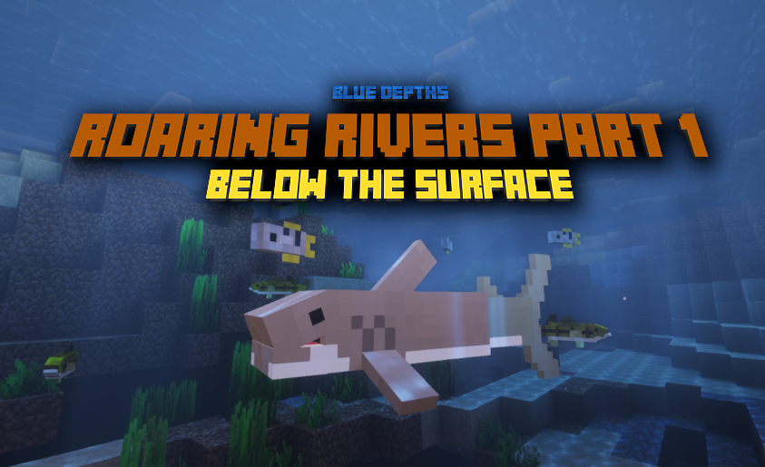

Latest: Update v1.1.0 now Live!

Roaring Rivers Part 1: Below the Surface
The first update to Blue Depths is now live: Roaring Rivers Part 1! Part 1: Below the Surface focuses on expanding the overall theme of Roaring Rivers, increasing biodiversity of the river biome, which was pretty lackluster before. The update focuses on not only adding new content, but also rebalancing, making technical changes, and fixing some bugs. I will be monitoring the feedback channels for any requested changes like spawn adjustments before working on part 2, so please leave any suggestions either on Planet Minecraft or the Google Forms!
What's New:
- Largemouth Bass
- Spawns exclusively in rivers
- Can be bucketed for easier transportation and kept as a pet
- New Items
- Bucket of Largemouth Bass
- Raw Largemouth Bass (Item Drop)
- Cooked Largemouth Bass
- Can be cooked inside the Deep Blue Grill in the same fashion as other mobs that drop new food in this datapack
- Archerfish
- Exclusively spawns in rivers
- Can be bucketed for easier transportation and kept as a pet
- Can spit water at insect mobs and players
- Prioritizes insects, even if players are nearby
- If no insect mobs are nearby, and a player out of water is close by, that player will be targeted
- Deals little damage to players, but can be devastating to insect mobs
- Bull Shark
- Spawns in lukewarm oceans and rivers
- Becomes aggressive if player stays too close for too long while in water
- Will give the player a warning if sticking around too long (bubbles and growl)
- Once player leaves shark alone, it's temper will slowly fade away
- Item Drops
- Bull Shark Pup
- Bull Shark Tooth
- Added the Bull Shark Pup
- Aggressive towards players
- Won't grow by itself over time, player needs to feed it in order to trigger growth
- Will eat Largemouth Bass, salmon, and tropical fish if thrown at them
- New Commands
- Added a new summon command
- Can be used to spawn in the new creatures added for Blue Depths
- Simple use /function blue_depths:summon/
- A list of different mobs will appear and autofill depending on what you want to spawn
- Added a new display command
- If you would like to display the models of these mobs, you can use this command to do so
- Simply use /function blue_depths:display/
- A list of different mobs will appear and autofill depending on what you want to display
- To get rid of these models, simply use /function blue_depths:display/kill_display
- It will destroy all nearby displays
- Added a new summon command
- Added a new easter egg
- A new easter egg can be found for players to find, making Blue Depths have a total of 2 easter eggs so far.
QOL changes:
- Catfish changes
- Spawn rate has been decreased by 33.3%
- Back to the same spawn rate as it did in the initial release of Blue Depths (1.0.0)
- Cooked Catfish Saturation has been buffed
- Went from a value of 6 to 8
- Spawn rate has been decreased by 33.3%
- Great White Shark Pup changes
- Great White Shark Pups are no longer aggressive towards players
- IMPORTANT: Great White Shark Pups that existed in prior worlds after update is installed will have their
growth progress reset
- This has no affect on fully grown Great White Sharks, they will not have their growth reset and will act the same as before
Bug Fixes
- Fixed potential issue of bucket usage on nonbucketable Blue Depths mobs
- Fixed a bug where some fish (mostly the sturgeon) would swim in directions they aren't facing